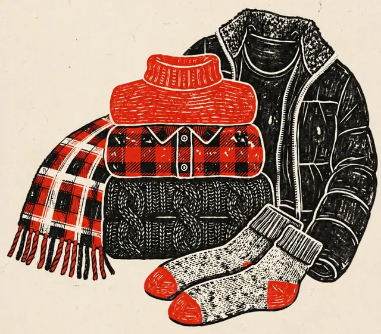

Devenir
membre
Un formulaire en ligne, une signature électronique, et le comité s'occupe du reste. Vous choisissez le statut qui correspond à votre disponibilité.
50 CHF par an, pour tous les statuts

Association genevoise à but non lucratif
Des bénévoles qui vont, en maraude, à la rencontre des personnes qui vivent dans la rue à Genève. Avec un repas, une boisson chaude, et du temps pour écouter.
Nos valeurs
01L'association
GE-FAIS est une association genevoise portée par des bénévoles. Son action principale, ce sont les maraudes : sortir dans la ville pour aller vers les personnes qui vivent dehors, plutôt que d'attendre qu'elles viennent à nous.
Autour de ces tournées, l'association vit comme toutes les associations : on se réunit entre membres, on se forme, on organise des sorties, et l'assemblée générale réunit tout le monde pour faire le point. La dernière s'est tenue en décembre 2025.
Personne n'est payé, personne n'a besoin d'être un·e professionnel·le du social pour nous rejoindre. Il suffit d'avoir envie d'être là, à son rythme.
Plus largement, GE-FAIS mène des actions de solidarité en Suisse et hors frontières, dans le respect de la dignité humaine, des cultures et des réalités locales. Chaque membre signe notre charte éthique et de valeurs.
Les façons de s'engager02Sur le terrain
Une maraude, c'est une tournée à pied dans la ville, à la rencontre des personnes qui vivent dans la rue. Pas de guichet, pas de file d'attente : c'est nous qui nous déplaçons.
Un parcours type
Les membres qui participent se donnent rendez-vous avant le départ. On prépare ensemble ce qu'on emporte et on s'organise.
La tournée se fait à pied, en petit groupe, dans les rues de Genève.
On s'arrête, on se présente, on propose un repas ou une boisson chaude, sans jugement lié à l'origine, à la situation, aux croyances ou au parcours de vie. Rien n'est imposé : chacun est libre d'accepter, de discuter, ou de passer son tour.
Souvent, le café n'est qu'un point de départ. Ce qui compte, c'est la conversation, l'écoute, le fait d'être salué et reconnu.
Après la tournée, on prend un moment entre nous pour partager ce qu'on a vécu, et préparer la suivante.
Ce qui se dit pendant une maraude reste confidentiel. Aucune photo, vidéo ou témoignage d'une personne rencontrée n'est utilisé sans son autorisation préalable : c'est un engagement de notre charte.
Plusieurs maraudes ont eu lieu au début de l'année 2026. Les prochaines dates et les lieux de rendez-vous sont communiqués aux membres.
Ce qu'on emporte
Un repas, une boisson chaude.
Du temps, de l'écoute.
03La vie de l'association
Une association, ce sont aussi des rendez-vous plus discrets. Ce sont eux qui permettent de partir sur le terrain bien préparés, et de décider ensemble de la suite.
Pour organiser les prochaines sorties, se donner des nouvelles et prendre les décisions du quotidien.
RéunionPour se préparer avant d'aller sur le terrain et échanger sur nos manières de faire.
FormationDes moments entre membres, pour apprendre à se connaître autrement qu'en action.
SortieDes créneaux tenus par des membres de l'association, annoncés dans l'agenda.
PermanenceLe rendez-vous où toutes et tous les membres font le point sur l'année et votent les grandes orientations. La dernière a eu lieu en décembre 2025.
AG04Agenda
Les dates sont d'abord confirmées aux membres, puis publiées ici.
05S'engager
On peut venir sur le terrain, soutenir de loin, ou simplement aider l'association à tenir. Toutes ces formes d'engagement comptent.
Un formulaire en ligne, une signature électronique, et le comité s'occupe du reste. Vous choisissez le statut qui correspond à votre disponibilité.
50 CHF par an, pour tous les statuts
Le statut de membre actif est fait pour celles et ceux qui veulent participer aux maraudes et aux rendez-vous de l'association.
Pas le temps de vous engager en personne ? Un don soutient directement les actions de l'association.
Extraits de notre charte éthique et de valeurs, signée au moment de l'adhésion.
Lire la charte complète06Adhésion
La cotisation est de 50 CHF par an, quel que soit votre statut. Ce qui change, c'est la présence attendue aux rendez-vous de l'association.
Vous hésitez entre deux statuts ? Indiquez-le dans le formulaire, le comité en discutera avec vous.
Vous participez aux maraudes et à la vie de l'association.
Le statut actif pour les membres de nationalité suisse.
Vous soutenez l'association sans participer aux activités.
Actif, actif suisse ou passif, selon le temps que vous pouvez donner.
En ligne, en quelques minutes. Vous signez électroniquement votre adhésion et la charte éthique.
Chaque demande est lue par le comité de l'association.
La présidence et la vice-présidence cosignent votre adhésion.
On vous contacte pour confirmer votre adhésion et régler les 50 CHF.
07Dons
Pas besoin d'être membre pour aider. Chaque contribution, quel que soit son montant, permet à l'association de poursuivre ses actions.
Scannez le QR code avec l'application de votre banque : l'IBAN et le bénéficiaire se remplissent tout seuls. Le paiement par TWINT arrive bientôt.
Don de vêtements

Vestes. Sous-vêtements. Chaussettes. Plaids et couvertures.
Pour nos prochaines maraudes. Des vêtements propres et en bon état ; sous-vêtements et chaussettes neufs.
08Questions fréquentes
Voici celles qu'on nous pose le plus souvent avant d'adhérer.
Une autre questionNon. Personne ne vous demandera un diplôme ou un parcours dans le social. Des formations sont organisées entre membres pour se préparer au terrain, et l'on part en maraude à plusieurs.
50 CHF par an, quel que soit le statut choisi : membre actif, membre actif suisse ou membre passif.
Les deux statuts permettent de participer pleinement aux activités. Le statut de membre actif suisse concerne les personnes de nationalité suisse, avec une présence attendue à 40 % des rendez-vous, contre 80 % pour le statut de membre actif.
Oui, de deux façons. Le statut de membre passif vous permet de soutenir GE-FAIS sans participer aux activités. Et vous pouvez faire un don, sans être membre : par virement, bientôt par TWINT, ou en donnant des vêtements chauds.
Le comité étudie votre demande. Si elle est acceptée, la présidence et la vice-présidence cosignent votre adhésion. Vous êtes ensuite contacté·e pour confirmer et régler la cotisation.
Rien à payer au moment du formulaire. C'est une fois votre adhésion validée que le comité vous contacte et vous indique comment régler les 50 CHF.
De respecter notre charte éthique et de valeurs : respecter les personnes rencontrées et leur confidentialité, participer aux activités auxquelles vous vous inscrivez et prévenir en cas d'absence, suivre les consignes et signaler au comité toute situation à risque.
Pas des personnes rencontrées sans leur autorisation préalable. Notre charte interdit toute utilisation d'image, de vidéo ou de témoignage sans accord : la protection de la vie privée est une obligation fondamentale.
Les maraudes ont lieu à Genève, mais l'association mène des actions de solidarité en Suisse et hors frontières, toujours dans le respect des cultures et des réalités locales.
Oui, et c'est très utile en hiver : vestes, sous-vêtements, chaussettes, plaids et couvertures. Écrivez-nous en message sur Instagram (@associationgefais) ou à contact@gefais.ch pour organiser le dépôt.
Ses membres, tous bénévoles. Un comité de quatre personnes coordonne l'ensemble : présidence, vice-présidence et trésorerie, secrétariat, et communication.
09Contact
Une question sur l'adhésion, une envie de nous rencontrer, une proposition ? Le comité vous répond, par e-mail ou en message sur Instagram.
Le Jet d'eau, Genève